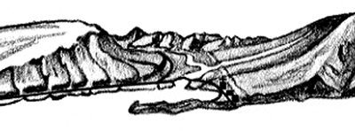
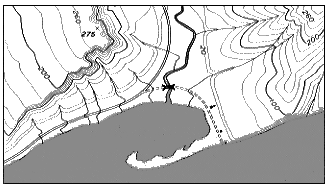

Por favor espera até a animação estar completamente carregada.
Descrição da Animação
A animação apresenta contornos (de superfícies) equipotenciais em torno de uma distribuição de carga. A barra mostra o trabalho realizado para mover a carga de prova vermelha (a posição é dada em metros, o potencial elétrico em volts e o trabalho em microjoules). As superfícies equipotenciais são simplesmente superfícies (contornos ou linhas, quando representadas em 2-D) onde o potencial elétrico é constante. Início.
Exploração
Os contornos equipotenciais são semelhantes aos contornos topográficos dos mapas de formações montanhosas (ver imagens abaixo). Os contornos equipotenciais estão igualmente espaçados para que cada contorno represente uma determinada variação de potencial elétrico (nos mapas topográficos, os contornos igualmente espaçados representam uma certa variação na cota do terreno).
|

|
 |
|
Uma região montanhosa (à esquerda) e o correspondente mapa de contornos topográficos (à direita) |
|
|
créditos: United States Geological Survey: |
|
Sabias que...
A alteração da energia potencial é proporcional à variação do potencial elétrico (sendo o valor da carga de prova a constante de proporcionalidade). Se a variação de potencial elétrico é nula, também é nula a variação da energia potencial elétrica e portanto o trabalho realizado é nulo! Quando moves uma carga positiva na direção de outra carga positiva, tens de realizar um trabalho positivo (pois as cargas repelem-se e terás de vencer essa interação). Quando moves uma carga positiva na direção de uma outra negativa, então realizas um trabalho negativo (pois as cargas atraem-se e a força que exerces sobre a carga de prova é contrária a essa interação).
O campo elétrico em qualquer ponto é sempre perpendicular à linha (ou contorno) equipotencial. Podes observar isso com a representação do vetor força na carga de prova quando moves a carga ao longo do campo de potencial elétrico. O sentido do campo elétrico corresponde ao da variação máxima das linhas equipotenciais (se isto fosse um mapa topológico, obter-se-ia um mapa com três montanhas e um vale acentuado). Quantas cargas positivas e negativas se encontram neste contorno eletrostático? Nota que sendo o campo elétrico perpendicular às linhas equipotenciais, se a carga se mover ao longo de uma linha equipotencial, não há realização de trabalho (a força elétrica e o deslocamento são perpendiculares entre si!)
Ilustração da autoria de Anne J. Cox.
© 2004 by Prentice-Hall, Inc. A Pearson Company
© 2014 Wolfgang Christian, Mario Belloni, Paulo Simeão Carvalho, Edite Briosa,
Manuel Filipe Costa